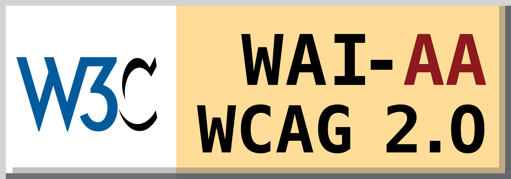
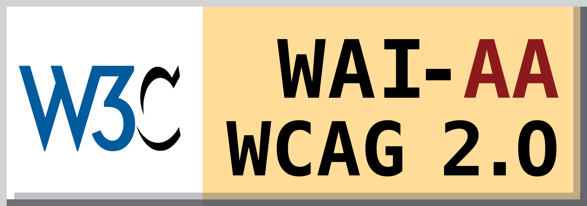

Design like you give a damn!
Adobe, New York February 2020
Léonie Watson, TetraLogical
Léonie Watson, TetraLogical
Adobe, New York February 2020
Léonie Watson, TetraLogical
Read the rule book, then rip it up and create something that challenges the accepted wisdom
 

From the World Wide Web Consortium (W3C):
When a User Interface Component displays a visible keyboard focus, all of the following are true:
- Minimum area: The focus indication area is greater than or equal to the longest side of the bounding rectangle of the focused control, times 2 CSS pixels.
- Focus contrast: Color changes used to indicate focus have at least a 3:1 contrast ratio with the colors changed from the unfocused control.
- Contrast or thickness: The focus indication area has a 3:1 contrast ratio against all adjacent colors for the minimum area or greater, or has a thickness of at least 2 CSS pixels.
For sale: baby shoes, never worn
Be curious about everything, and never stop questioning how you can make things better
It's about designing for the needs of people with permanent, temporary, situational, or changing disabilities — all of us really
Ensure your interface provides a comparable experience for all so people can accomplish tasks in a way that suits their needs without undermining the quality of the content.
Having a basic alternative, whether it's alt text, a transcript, audio description, or sign language, makes the content accessible but to be equivalent it needs to capture the essence of the original.
Providing synchronized closed captions makes your video accessible. But making them customizable, color coded, and repositionable provides a more comparable experience.
People use your interface in different situations. Make sure your interface delivers a valuable experience to people regardless of their circumstances.
Users may need help when they first encounter a complex form or interaction. This help may become redundant, even distracting, as a user becomes more familiar with the form or interaction.
You're aware that the video content you are providing will be consumed on mobile devices, which may be in public spaces where people might prefer to consume the content without being antisocial. For smaller viewports, sound is switched off and captions activated by default.
Use familiar conventions and apply them consistently.
Use consistent web and platform design patterns to help build familiarity and understanding.
Use plain language consistently across platforms including editorial that is relied on by screen reader users such as text alternatives, headings, labels for buttons and so on.
Ensure people are in control. People should be able to access and interact with content in their preferred way.
'Infinite scrolling' can be problematic, especially for users navigating by keyboard because they can't get past the stream of refreshing content. Give the option to turn off this feature and replace it with a 'load more' button.
Some users find that animations or parallax scrolling cause nausea, and others find them plain distracting. Where they play automatically, they should at least be easy to stop, by providing prominent playback controls.
Consider providing different ways for people to complete tasks, especially those that are complex or non standard.
Alternative ways of presenting data, such as data tables for info graphics, should be available to all users as an option rather than a hidden link just for screen reader users. Accessible alternatives can benefit not just a specific target group but all users as long as we offer the choice.
Help users focus on core tasks, features, and information by prioritising them within the content and layout.
Progressively reveal features and content when needed, not all in one go.
An email application is principally for writing and reading email. The "compose" button is, therefore, present on all screens, and early in the focus order.
Consider the value of features and how they improve the experience for different users.
Using voice interfaces to control multimedia, search for content, output from music or TV adds value for people who struggle to use other interfaces.
Enhance functionality using platform features. The vibration API makes notifications more usable by deaf and hard of hearing people while the geolocation API makes it easier for people with mobility impairments to use location based services.
Strive for beauty and elegance, but understand that those things will not be the same for everybody
three hot air balloons hang together in a calm, sunny sky
Piglet sidled up to Pooh from behind.
'Pooh!' he whispered.
'Yes, Piglet?'
'Nothing', said Piglet, taking Pooh's paw. 'I just wanted to be sure of you'.
Know that planning is important, but that imagination makes the extraordinary possible.
When I started in Adobe Design, I was asked how many inclusive designers I wanted on my team. I asked how many designers we had, and when I got the answer—hundreds, worldwide—I said that should just about be enough.
It's a creative challenge
Six words to describe who you are
It just has to be a little bit better than yesterday
...be disruptive, be innovative, be inclusive. Be whatever you want to be. But whatever you do, let’s get out there and design like we give a damn!
Adobe, New York February 2020
Léonie Watson, TetraLogical